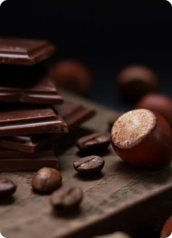
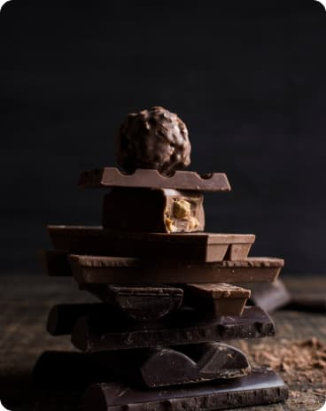

    <section class="top-sellers">
        <div class="container">
            <h2 class="top-sellers-header"><span>Top</span> sellers</h2>
            <div class="top-sellers-wrap">                
                <ul class="top-sellers-list list">
                    <li class="top-sellers-list-items">
                    </li>

                    <li class="top-sellers-list-items">
                    </li>

                    <li class="top-sellers-list-items">
                    </li>
                    <li class="top-sellers-list-items"><p class="top-sellers-text text-hide-tab">Crazy enough chocolate originates from 
                        a bean just like the coffee bean called Cacao. Cacao has been around for thousands 
                        of years and was first discovered by
                         the Native American tribe called the Mayans.</p></li>
                </ul>

                
                
                <div class="top-sellers-tab-wrap">
                    <p class="top-sellers-text text-hide-mob">Crazy enough chocolate originates from 
                        a bean just like the coffee bean called Cacao. Cacao has been around for thousands 
                        of years and was first discovered by
                         the Native American tribe called the Mayans.</p>
                    <button class="top-sellers-btn" type="button">Buy now</button>
                </div>
 
        </div>
    </section>
